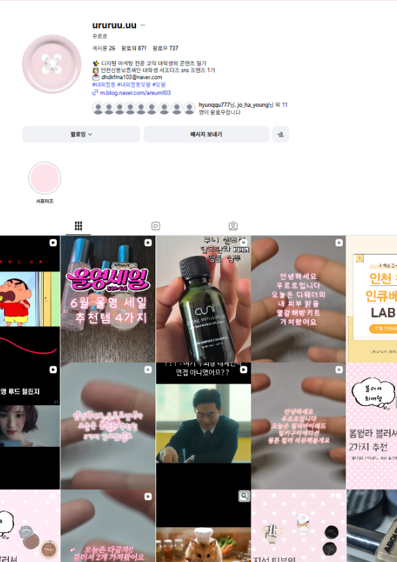

블로그, 인스타그램 계정 운영


2026년 1월부터 뷰티 및 라이프스타일 분야를 중심으로 블로그를 꾸준히 운영하며 콘텐츠 제작 역량을 키워왔습니다.
추천 아이템 소개, 솔직한 사용 후기, 제형 비교 등 사용자에게 실질적인 도움이 되는 정보를 중심으로 콘텐츠를 작성하고 있습니다.
또한 2026년 3월부터 인스타그램 계정을 운영하며 디지털 마케팅 트렌드, 뷰티 꿀팁, 추천 제품 소개 등의 콘텐츠를 제작하고 있습니다.
단순한 정보 전달을 넘어 사용자의 관심을 끌 수 있는 콘텐츠 기획과 시각적 표현에 집중하고 있습니다.
콘텐츠 제작에는 VLLO, CapCut, Premiere Pro, After Effects를 활용하여 영상 편집 및 숏폼 콘텐츠를 제작하고 있으며,
플랫폼 특성에 맞는 콘텐츠 기획과 운영 경험을 쌓아가고 있습니다.